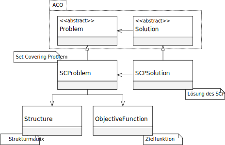

程序包 eu.andredick.scp
package eu.andredick.scp
SCP 组件（集合覆盖问题的定义）
在ACO元启发式的上下文中，集合覆盖问题是抽象问题的实现 eu.andredick.aco.problem。
成分:
- SCProblem (集合覆盖问题的类别)
SCProblem - SCPSolution (集合覆盖问题的解)
SCPSolution - Structure (集合覆盖问题的覆盖矩阵)
Structure - ObjectiveFunction (集合覆盖问题的目标函数)
ObjectiveFunction
UML 分类图:

-
类类说明集合覆盖问题的目标函数
SCP 的目标函数是所有加权决策变量的总和.
c_j权重（也是成本、系数）被明确分配给SCP的子集j.
决策变量在 SCP 的解中 (SCPSolution) 明确定义.
因此，目标函数由权重 (ObjectiveFunction.weights) 和规则 (ObjectiveFunction.getValue(SCPSolution))组成,
它通过权重 (ObjectiveFunction.weights) 和变量特征 (SCPSolution) 计算目标函数的值.该类表示 集合覆盖问题 (SCP).
在 ACO 元启发式的背景下，SCP是抽象问题的一种表现形式。该类表示集合覆盖问题（SCP）的解。该类表示集合覆盖问题的结构矩阵 A=(a_ij).